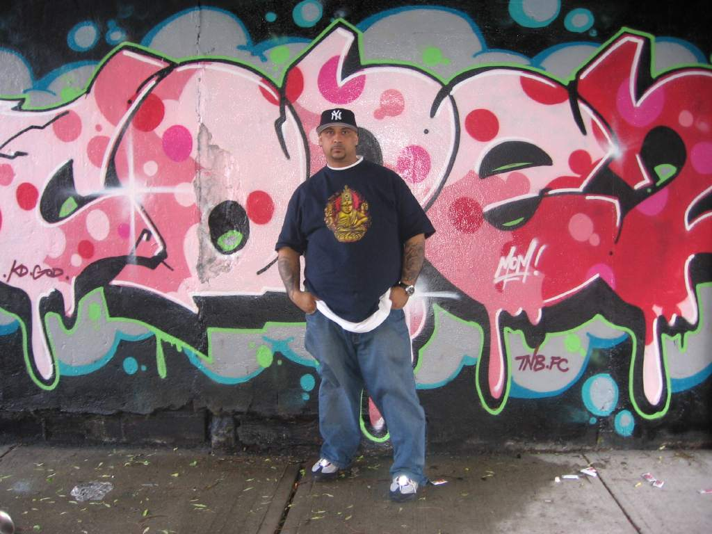

Artist presentation
Cope 2
Fernando Carlo (also known as Cope2) is an artist from the Kingsbridge section of the Bronx, New York. He has been a graffiti artist since 1978-79, and has gained international credit for his work. Though he is now known worldwide as being a general founder of graffiti, he didn't receive recognition in the mainstream graffiti world until the mid-1990s Cope2's cousin "Chico 80" influenced Cope into writing. In 1982 he made his own crew called Kids Destroy and eventually it changed to Kings Destroy after he dubbed himself "King of the 4 Line".Cope2 is well known for his "throw-up" and is also one of the most known users of "wildstyle" graffiti, a style which originated in the Bronx.
Follow Cope 2 on: